The Endless Goblin HordeLevel 10 · 3 treasures+6 against Dwarves (it is a long story).Bad stuff: Roll a die: 1–2 and you are trampled to death, otherwise lose that many levels.
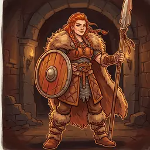
Shieldmaiden ChampionLevel 8 · 2 treasuresNever attacks a woman: a female fighter just gets 1 treasure from her.Bad stuff: Lose your class(es); with no class, lose 3 levels.
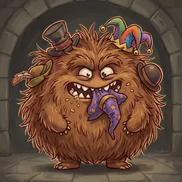
Hairy Hat-MuncherLevel 12 · 3 treasures+3 against Dwarves and Halflings.Bad stuff: Flattens you and eats your hat: lose the headgear you wear.
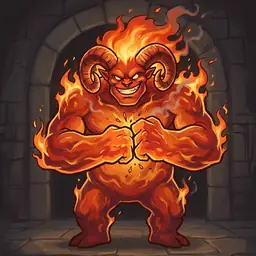
Horned InfernoLevel 18 · 5 treasures · 2 levelsWon’t chase anyone of level 4 or lower.Bad stuff: You are toasted to a crisp. Dead.
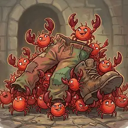
Pinch MitesLevel 1 · 1 treasureYou can’t run away from them.Bad stuff: Lose your armor and everything worn below the waist.
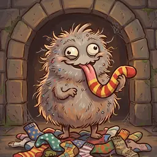
Sock SlurperLevel 1 · 1 treasure+4 against Elves.Bad stuff: Lose the footgear you wear; with none, lose a level.
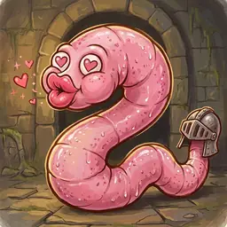
Kissy LeechLevel 8 · 2 treasures+6 against Elves.Bad stuff: It kisses your face off, hat and all: lose all headgear and a level.
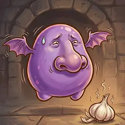
Hovering SnifferLevel 10 · 3 treasuresBribe it with an item worth 200 gold or more to make it leave. A garlic gargle kills it outright.Bad stuff: You can’t escape it, nothing helps: lose 3 levels.
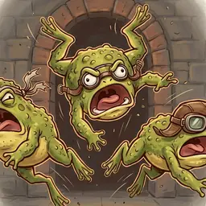
Kamikaze ToadsLevel 2 · 1 treasure-1 to run away.Bad stuff: They bite: lose 2 levels.
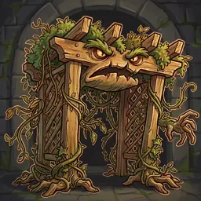
Menacing PergolaLevel 8 · 2 treasuresNobody can help you against it.Bad stuff: Lose 3 levels.
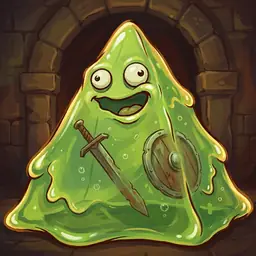
Jiggling PyramidLevel 2 · 1 treasure+1 to run away.Bad stuff: Drop all your Big items.
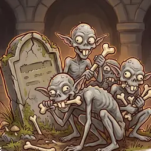
Grave GnawersLevel 8 · 2 treasuresNo items or bonuses count against them: fight with your level alone.Bad stuff: Your level drops to the lowest level at the table.
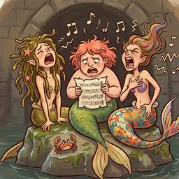
Off-Key SirensLevel 4 · 2 treasures+5 against Wizards.Bad stuff: Their singing is awful: lose 2 levels.
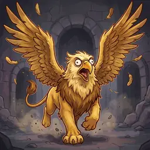
Stampeding SkygrifLevel 16 · 4 treasures · 2 levelsWon’t chase anyone of level 3 or lower.Bad stuff: You drop things as you flee: each other player takes one treasure card from your table or hand.
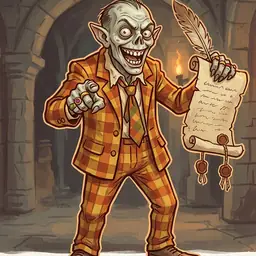
Timeshare PitchmanLevel 14 · 4 treasuresYour level doesn’t count: fight him with bonuses only.Bad stuff: You sign up: lose 1,000 gold worth of items, or all of them.
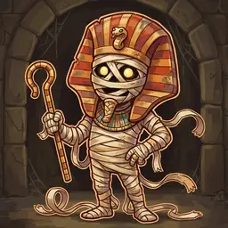
Pharaoh WrappingtonLevel 16 · 4 treasures · 2 levelsUndead. Won’t chase level 3 or lower; anyone higher who flees loses 2 levels even when they get away.Bad stuff: Lose all your items and your whole hand.
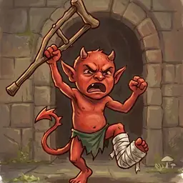
Limping ImpLevel 1 · 1 treasure+1 to run away.Bad stuff: A whack with its crutch: lose a level.
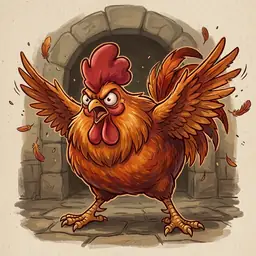
Furious RoosterLevel 2 · 1 treasureBeat it with fire or flame and gain an extra level.Bad stuff: Painful pecking: lose a level.
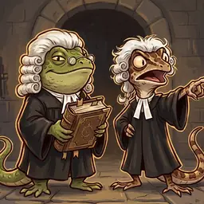
Litigation LizardsLevel 6 · 2 treasuresNever attack a Thief (professional courtesy): a Thief may instead swap 2 treasures in hand for 2 new ones.Bad stuff: An injunction: starting on your left, each player draws a card from your hand; discard the rest.
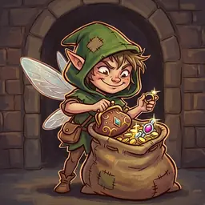
Pickpocket PixieLevel 4 · 2 treasures+5 against Elves.Bad stuff: Takes 2 of your items: the players on either side each pick one.
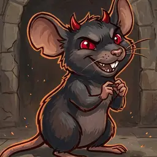
HellmouseLevel 1 · 1 treasure+3 against Clerics.Bad stuff: A nasty nip: lose a level.
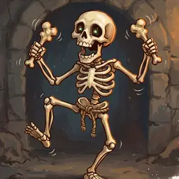
RattlebonesLevel 2 · 1 treasureUndead. If you flee, lose a level even if you get away.Bad stuff: A bony touch: lose 2 levels.
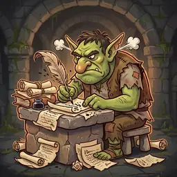
Forum TrollLevel 10 · 3 treasuresNo special powers, and very upset about it.Bad stuff: The highest-level player(s) each take one item from you.
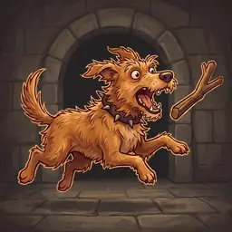
Snappy HoundLevel 2 · 1 treasureIf you can’t win, drop a pole or staff to distract it: you get away automatically.Bad stuff: Bite marks: lose 2 levels.
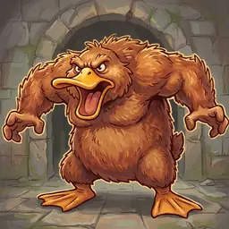
Duck-Billed TerrorLevel 6 · 2 treasures+6 against Wizards.Bad stuff: Discard your whole hand, or lose 2 levels.
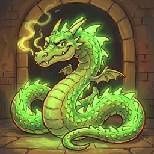
Uranium WyrmLevel 20 · 5 treasures · 2 levelsWon’t chase anyone of level 5 or lower.Bad stuff: Roasted and eaten. Dead.
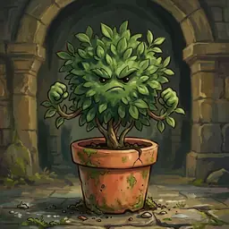
Ficus of MenaceLevel 1 · 1 treasureAn Elf who beats it draws an extra treasure.Bad stuff: None: you always get away.
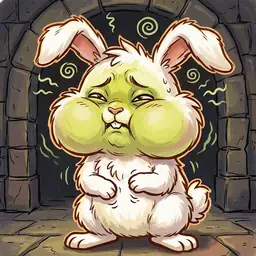
BarfabunnyLevel 6 · 2 treasuresBeat it with no help and no bonuses at all and gain an extra level.Bad stuff: Projectile sick: discard your whole hand.
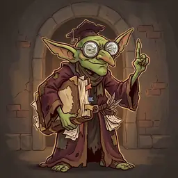
Nitpicking NerdLevel 6 · 2 treasures+6 against Warriors.Bad stuff: You become a plain Human: lose your races and classes.
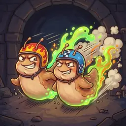
Turbo SlugsLevel 4 · 2 treasures-2 to run away.Bad stuff: Roll a die: lose that many items or cards from your hand, your pick.
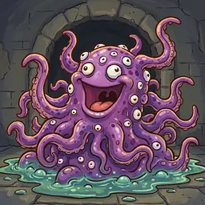
TentaclopolisLevel 18 · 4 treasures · 2 levels+4 against Elves. Won’t chase anyone of level 4 or lower, except Elves.Bad stuff: Grabbed, slimed and gobbled. Dead.
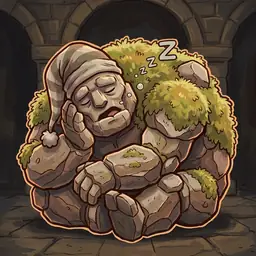
Sleepy BouldermanLevel 14 · 4 treasuresYou may simply walk past him and skip the fight (Halflings look tasty and must fight).Bad stuff: He gets the munchies and eats you. Dead.
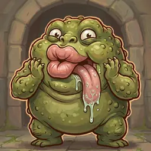
Slobber FiendLevel 12 · 3 treasures+4 against Clerics. Before the fight, discard one item of your choice.Bad stuff: A revolting kiss: lose 2 levels (3 for Elves).
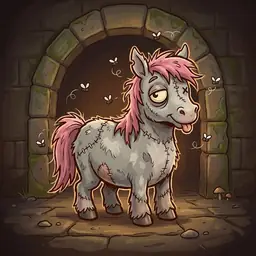
Zombie PonyLevel 4 · 2 treasuresUndead. +5 against Dwarves.Bad stuff: Kicks, bites and smells: lose 2 levels.
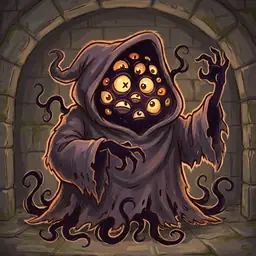
The Nameless DreadLevel 14 · 4 treasures+4 against Warriors.Bad stuff: Unspeakable death for anyone but a Wizard. A Wizard just loses the Wizard card.
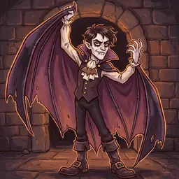
Bat-Cape PoserLevel 12 · 3 treasuresA Cleric can shoo him off without a fight and take all his treasure (no level).Bad stuff: He blocks the door and tells you his backstory: lose 3 levels.
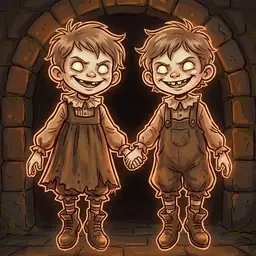
The Grave TwinsLevel 16 · 4 treasures · 2 levelsUndead. Won’t chase level 3 or lower; anyone higher who flees loses 2 levels even when they get away.Bad stuff: Back to level 1.
Items 38
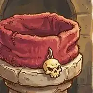
Tough-Guy Headband+3 · head · 400 goldHumans only.
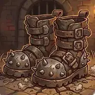
Stompy Boots+2 · foot · 400 gold
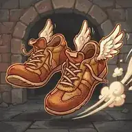
Sprint Sneakersfoot · 400 gold+2 to run away.
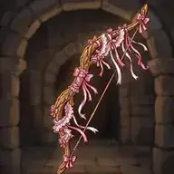
Frilly Longbow+4 · 2 hands · 800 goldElves only.
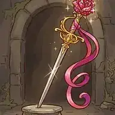
Dame’s Blade+3 · 1 hand · 400 goldWomen only.
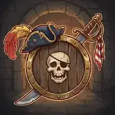
Swashbuckler Shield+2 · 1 hand · 400 gold
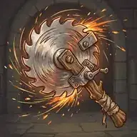
Buzzsaw of Mayhem+3 · 2 hands · 600 gold
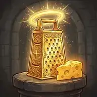
Holy Cheese Grater+3 · 1 hand · 400 goldClerics only.
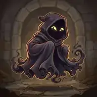
Shady Cloak+4 · 600 goldThieves only.
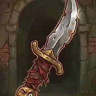
Backstabber’s Shiv+3 · 1 hand · 400 goldThieves only.
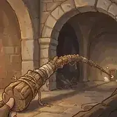
Extra-Long Pole+1 · 2 hands · 200 goldA pole.
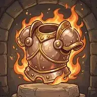
Blazing Breastplate+2 · armor · 400 goldFire and flame.
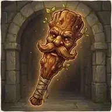
Fella’s Cudgel+3 · 1 hand · 400 goldMen only.Shin-Smasher Hammer+4 · 1 hand · 600 goldDwarves only.Brave Bucket+1 · head · 200 goldAntlered Helm+1 · head · 600 gold+1, or +3 for an Elf.Enormous Boulder+3 · 2 handsNo value.Charming Kneepads600 goldNot for Clerics. Whoever you ask for help can’t refuse or ask for treasure.Scruffy Jerkin+1 · armor · 200 goldStinky Fish Sandwich+3 · 400 goldHalflings only.Pointy Holy Mace+4 · 1 hand · 600 goldClerics only.Moonsilver Plate+3 · armor · 600 goldNot for Wizards.Leggings of Mighty Might+3 · 600 goldNot for Warriors.Tall Hat of Zap+3 · head · 400 goldWizards only.Cheater’s Rapier+3 · 1 hand · 600 goldElves only.Snack on a Stick1 handDiscard it to get away automatically from any monster of level 8 or lower.Very Fancy Title+3No value.Lucky Flip-Flopsfoot · 700 goldCurses you draw when you kick open a door don’t affect you.Wall-Sized Shield+4 · 1 hand · 600 goldWarriors only.Stubby Plate+3 · armor · 400 goldDwarves only.Tap-Dancing Sword+2 · 400 goldNot for Thieves. Needs no hands.Gooey Mail+1 · armor · 200 goldRascal’s Sword+2 · 1 hand · 400 goldPointy Kneecaps+1 · 200 goldStaff of Wildfire+5 · 1 hand · 800 goldWizards only. A fiery staff.Folding Stepstool+3 · 400 goldHalflings only.Everything Halberd+4 · 2 hands · 600 goldHumans only. A pole.Soothing Sousaphone1 hand · 300 gold+1 to run away.
One-shot treasure 22
Fonfusing Cizzy Potion+3 · 100 gold+3 to either side in any fight.Fizzing Doom Potion+5 · 200 gold+5 to either side in any fight.Hot Sauce Potion+3 · 100 gold+3 to either side in any fight. Fire and flame.Frosty Bang Potion+3 · 100 gold+3 to either side in any fight.Zappy Dart+5 · 300 gold+5 to either side in any fight.Sour Energy Drink+2 · 200 gold+2 to either side in any fight.Garlic Gargle+2 · 100 gold+2 to either side in any fight, or kill a Hovering Sniffer outright.Liquid Courage+2 · 100 gold+2 to either side in any fight.Shiny Balloons+5+5 to either side in any fight. No value.Snooze Syrup+2 · 100 gold+2 to either side in any fight.Artisanal Spring Water+2 · 100 goldOnly for Elves: +2 for each Elf in the fight.Mirror Twin300 goldOnly if you fight alone: your strength is doubled.Jar of Sticky Paste100 goldWhen someone gets away from a monster, they must roll again.Hug Juice200 goldIn any fight, all the monsters leave. No treasure.Pop-Up Wall300 goldWhen running away, you (and your helper) get away automatically.Vanishing Tonic200 goldWhen you fail to run away, you get away after all.Weighted Die300 goldAfter your own roll, change it to any number.Wishing Lantern500 goldOn your own turn, one monster vanishes, even after it caught you. If it was your only monster, take its treasure (no level).Parrotify Potion1300 goldIn any fight, one monster turns into a parrot and flies off, leaving its treasure (no level).Not-My-Problem Potion300 goldIn any fight, another player of your choice takes over the fight, with its rewards. The first player may still loot the room.Ring of Undoing500 goldCancel a curse, any time (including one already on you).Rummaging Rod1100 goldTake any one card you want from the discard piles.
Level cards 9
Windfall of CoinsGo up a level. Play on anyone, any time, but never to reach the winning level.Squash a Beetle ColonyGo up a level. Play on anyone, any time, but never to reach the winning level.Snacks for the RefereeGo up a level. Play on anyone, any time, but never to reach the winning level.Creative ArithmeticGo up a level. Play on anyone, any time, but never to reach the winning level.Obscure FootnoteGo up a level. Play on anyone, any time, but never to reach the winning level.Tonic of Pure SwaggerGo up a level. Play on anyone, any time, but never to reach the winning level.Fire the PorterGo up a level, only if a Porter is in play (anyone’s): the Porter is discarded.Loot the LeftoversGo up a level. Only right after a fight (anyone’s).Complain LoudlyGo up a level. Not if you are the highest level, or tied for it.
Curses 17
Career Change HexIf you have a class, it is replaced by the first class card in the door discards (or just lost).Family Tree HexIf you have a race, it is replaced by the first race card in the door discards (or just lost).Gender Swap HexYour sex changes for good, and you are at -5 in your next fight while you get used to it.Hen Hat HexA hen roosts on your head: -1 to all your die rolls, until something takes your headgear.Goose of GloomYou picked up a goose in a dungeon. Lose 2 levels.Tax CollectorDiscard an item of your choice. Everyone else must discard items worth at least as much, or discard all their items and lose a level.ButterfingersDiscard one Big item of your choice.Rotten LuckLose a level.Light-Fingered GremlinDiscard one small item of your choice.Grabby NeighboursThe player on your left takes a random card from your hand, then the player on your right does.Career CrisisDiscard a class (your choice if you have two). With no class, lose a level.Identity CrisisDiscard your race cards and become a plain Human.Rust StormLose the armor you are wearing.Sock GoblinLose the footgear you are wearing.Sudden GustLose the headgear you are wearing.Spiteful MirrorIn your next fight only, weapons give you no bonus.Utterly Rotten HexLose the item that gives you your biggest bonus.
Classes 4
WarriorBerserk: in a fight, discard up to 3 cards, +1 each. You win ties.WizardFlight: discard up to 3 cards, +1 each to run away. Charm: discard your whole hand to send one lone monster away and take its treasure (no level).ThiefBackstab: discard a card to give a fighter -2 (once per victim per fight). Steal: discard a card to try for a small item: roll 4+, or lose a level.ClericResurrection: instead of kicking a new door, take the top door discard and discard a card. Turning: discard up to 3 cards against undead, +3 each.
Races 3
Elf+1 to run away. Go up a level for each monster you help someone kill.DwarfCarry any number of Big items. Hold up to 6 cards.Halfling-1 to run away. Once per turn, sell one item for double its price.
Specials 11
Mixed HeritageYou may have two races. With one race, you get its perks and none of its drawbacks.Double MajorYou may have two classes. With one class, you get its perks and none of its drawbacks.Uninvited GuestPlay with a monster from your hand during any fight: it joins in.LoopholeWear one item the rules would not allow (any restriction or slot). Lose this card when you lose that item.Heavenly FavorHowever it is drawn, every Cleric goes up a level at once, even to win.Mind If I Borrow That?In your own fight, take one item from another player, if it turns your loss into a win.Smoke and MirrorsIn any fight, swap one monster (and its boosts) for a monster from your hand.Gone FishingIn any fight, all the monsters leave; the fighter draws 2 treasures.PorterPlay any time. Carries one extra Big item for you. Won’t fight.Treasure Pile!When you get this card, draw 3 more treasures at once.Level HeistPick a player: they go down a level and you go up one (never to win).
Monster boosts 6
Primordial+10 to a monster. If it is beaten, 2 more treasures.Gargantuan+10 to a monster. If it is beaten, 2 more treasures.Furious+5 to a monster. If it is beaten, 1 more treasure.Genius+5 to a monster. If it is beaten, 1 more treasure.Tiny-5 to a monster (never below level 1). If it is beaten, 1 less treasure (never below 1).Plus-OneThe monster brings a date: an identical second monster with the same boosts. Beat both for double levels and treasure.